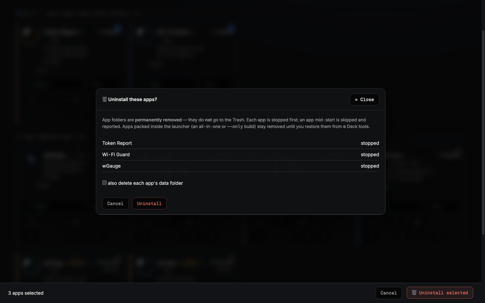
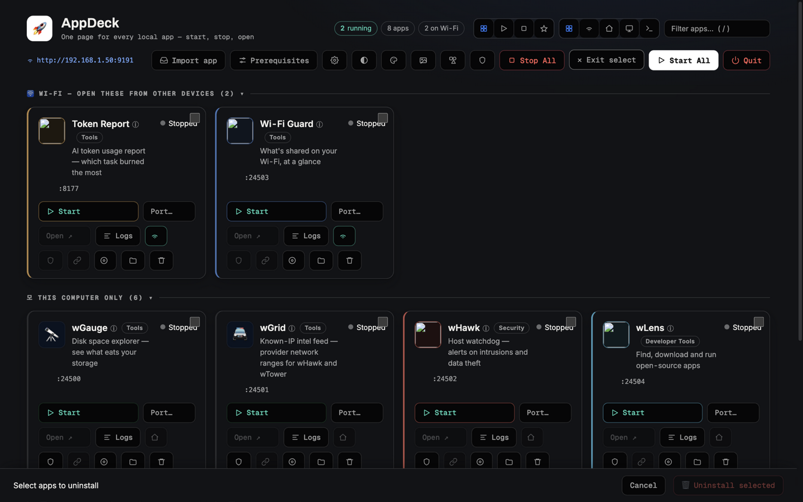

A single-executable desktop launcher that hosts your app deck — start, stop and share local web apps from one dashboard in its own window.
The launcher opens its own webview window and serves the dashboard on 127.0.0.1:9090 — nothing leaves your machine.
Any folder with an app.json becomes a card: start, stop and open it. Go and static-HTML apps both work.
Flip sharing per card; the launcher shows what's reachable from other devices vs local-only.
Ten themes and duotone/monogram icon packs — the deck looks the way you want it.
Go and HTML templates included, so a new app starts as app.json plus one source file.
Pack every app into a single executable with tools/genembedded — one file to hand out.


Prefer binaries? Grab per-platform zips or the All-in-One build (launcher + every app packed inside) from Releases. Apps live in the companion Apps repository.
Download from Releases